Poissonian normalization of the neural output stabilizes the across trial variance and improves linear discriminability among odors.
Contents
High-firing neurons have super-poissonian variance
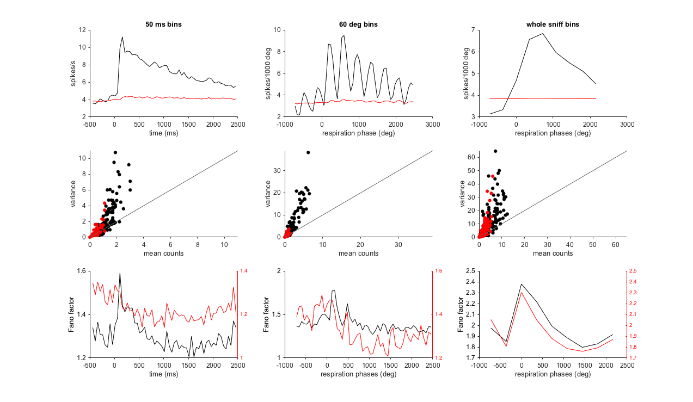The grand-averaged PSTH on the left is obtained from responses locked only to the first sniff. But the linear classifications that I will show later were performed on PSTHs obtained by time-binning each sniff (100 ms bins). I didn't use the angle-binning for classification (as I did instead in the middle PSTH above) in order to avoid the bias induced by the different lengths of the inhalation and exhalation phases. The following results however should not be affected by these choices. The scatter plots show that high-firing neurons have a spike count variance above their mean spike count ( of the Poisson distribution). Because the Poissonian noise should linearly scale with the mean, we can assume that these neurons greatly change their mean firing response, , on a trial-to-trial basis. This behavior increases the Fano factor of the neural population response and makes responses less consistent across trials (black line, bottom). Mean-matching (red dots and lines) is meant to randomly remove the contribution of those neurons whose activity largely exceed the overall firing rate of the population and consequently reduce the Fano factor. Note that the mean-matching method was introduced by Churchland et al., 2010 to exclude the possibilty that the reduction of the Fano factor during a response is trivially due to higher firing rates. Here, I'm employing mean-matching for a different goal. Also note, that after mean-matching there are still neurons that are activated and neurons that are suppressed by the stimuli, but the sum of their activity is flatter (red line, upper panel). It is very unlikely however that the brain completely ignores the output from those highly responding neurons. It is more likely instead that downstream brain areas use inhibition to down-weight the inputs from highly responding neurons. A type of normalization. Distinct however from that invoked in many works so far. I think indeed that the down-scaling method that the brain may want to use is the one that also stabilizes the variance of the responses across trials. The variance of any distribution is stabilized by the following transformation. Given
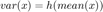
the stabilizing transformation is
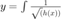
For a Poissonian distribution
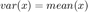
hence
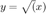
Effects of five distinct transformations on linear discrimination among stimuli
This is the performance of a linear classifier without transformation.
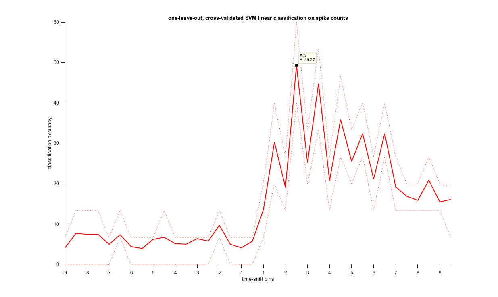A dumb normalization generally raccomended for linear classification:
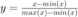
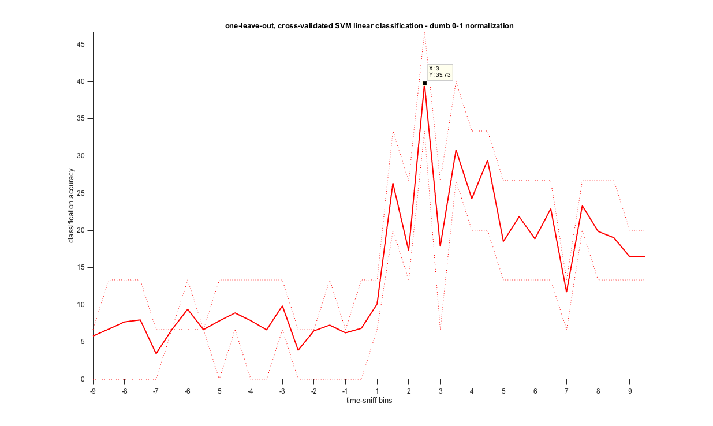Z-scoring Here I z-scored each neuron response across trials.
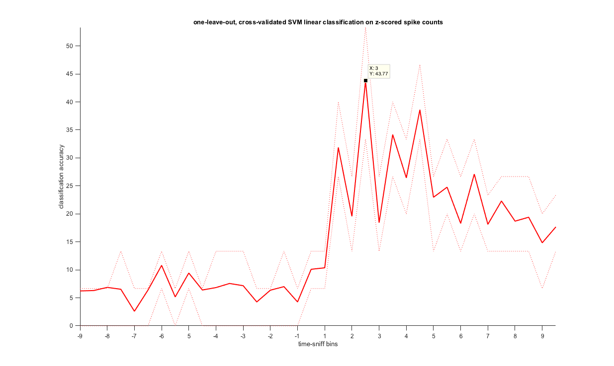A transformation that heavily weights highly responding neurons down
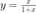
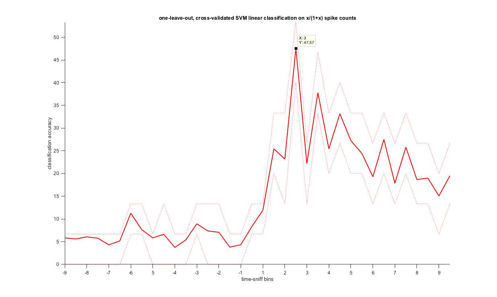Finally, the appropriate variance stabilizing transformation for Poisson spike counts:
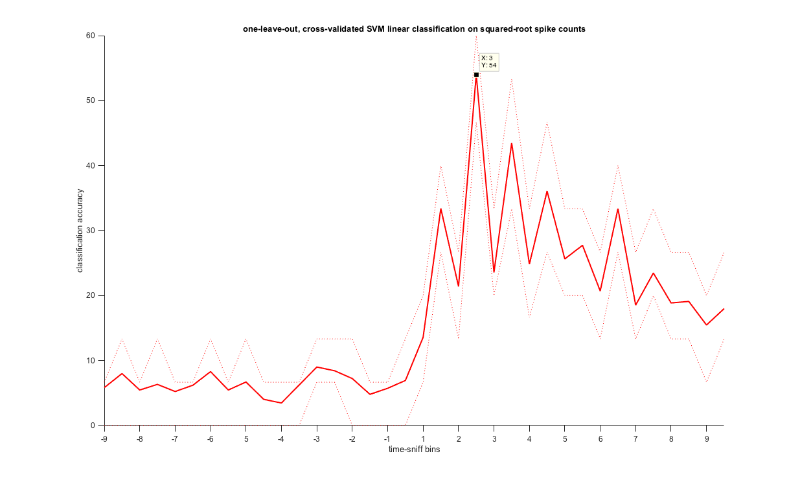As expected, this transformation outperforms the other ones.
However, there is still an open question. Do the benefits of this transformation result only from the stabilization of the variance or from a more uniform distribution of the distances between the mean stimuli representations as well? To answer this crucial question I z-scored the responses across neurons on a trial-to-trial basis instead that across trials.
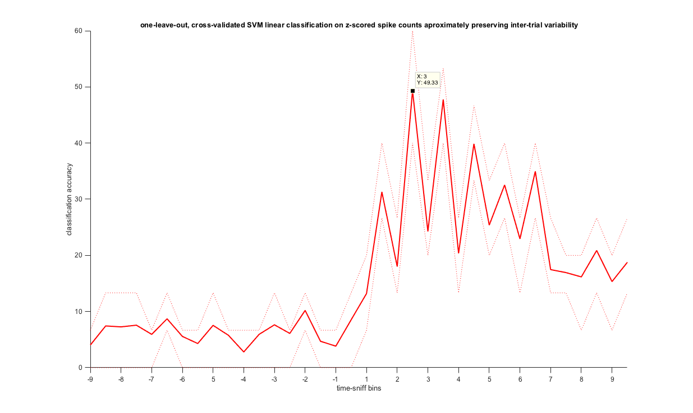The variance stabilization is still a plus as compared to the normalization of the average responses because it makes the linear decoder perform more accurately (smaller bias) and with a smaller error. I'm not an expert in this field, but I've never read something like this before.
Could a Hill function that down-scales low firing neurons inputs provide even better performances? I guess the answer is not since inhibitory responses diversify the tuning curves in the early phase of a response.
The variance of the highly responding neurons is actually super-poissonian. Should I extrapolate the Fano factor according to a generalized Poisson model (which has two lambdas) in order to ascertain the link function between the mean and the variance? I don't know, maybe. I'm not going to show further plots, but I can tell you that modeling the relationship between mean and variance with a power law did not do better than a dumb normalization.
I'm more interested in the synaptic mechanisms that could perform a variance stabilizing transformation in a downstream area such as the olfactory tubercle and on the manipulation of the inhibitory network during olfactory discrimination on a trial-by-trial basis. The point is not to mess up the network with some blue/yellow light, but to make lawful predictions about the effects of the manipulation. This will require me some more hard thinking and time, but I think it' is really worth of it.